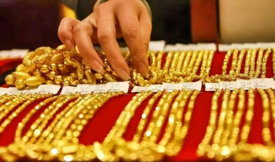
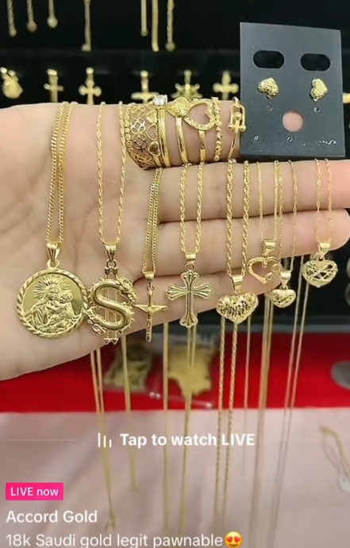
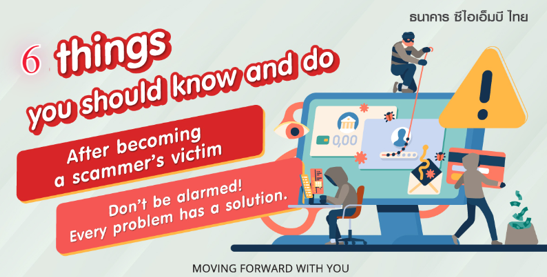
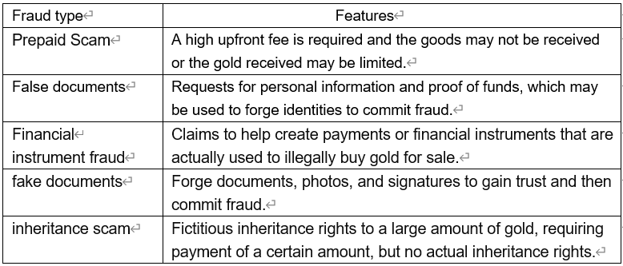

What should I do if I get cheated? How I was defrauded by Baorui and recovered the defrauded property!
Are you seduced by the allure of gold and want to invest in this market full of opportunities? But there are many investment scams in gold trading and the gold market.
Many criminals take advantage of people's desire and greed for gold investment and devise various methods to defraud money. If you want to invest in gold, you must learn how to recognize and avoid these scams. This article will introduce the scam of Baorui Enterprise Gold Investment and tell you how to prevent several common scams on the market.
What is baorui?
Baorui Enterprise is a company that does business on the Internet. They have been in business since February 2023. Their main business method is to sell things through live broadcasts. The things they sell include real gold, the kind of gold with 916 and 999 purity, as well as silver jewelry, jade, crystal and other things. Apart from that, they also sell cornucopias and various other things.
How did I get scammed by baorui?
Baorui Enterprises is a scam! ! ! In February of this year, I entered the live broadcast room of Baorui Enterprises on an e-commerce platform. They were selling gold jewelry, and the price was much lower than the market price. They claimed that what they were selling was Chinese gold, so there was no doubt about it.
At first it asks for fans’ attention and fan signs, and induces you to enter one of their fan groups. After entering the group, it posts two links! One link is a link they made themselves. The link says XX official flagship store, pretending to be an official link.
So I clicked this link without any doubt, and the link jumped to the payment interface, so I placed an order for 100,000+ gold in the process. I didn’t expect it! ! ! After the payment was made, the group was disbanded not long after! ! ! Finally I realized that I had been deceived! ! !
What is the process of Baorui's fraud routine?
After I discovered that I might have been defrauded by baorui Enterprises, I began to learn more about their scam and the entire operation process.
By checking the payment details of the payment order, I found that the address of the collection agency is in a small county in Yunnan. The agency only has an individual business license and was only established in December 2023. It was obviously registered recently. This makes me suspect that they may have purchased an existing business license to conduct fraudulent activities.
Their fraud mode is to use a business license for a period of time to conduct fraudulent activities, defraud some people of their money, then immediately cancel the business license, and then use the same method to use a new business license to continue live broadcasting and attract traffic, defrauding more people. This method of continuously
replacing business licenses allows Baorui Enterprises to continuously evade regulatory and legal prosecution, making it more difficult for victims to recover losses.
How did you recover your funds after being defrauded by Baorui?
After I discovered that I had been defrauded by Baorui Enterprises, I took a series of rights protection measures and finally successfully got back the funds I deserved. Here are the steps I took:
Step 1: Collect Evidence
I first collected all relevant evidence of transactions with Baorui, including detailed transaction records, payment vouchers, and communication records with Baorui Enterprises, etc., to ensure that I had sufficient evidence to support my claims.
Step 2: Report the crime
I reported the case to the local police, detailed the fraud committed by Baorui Enterprises, and submitted the evidence I had collected. The purpose of this is to allow legal agencies to intervene in the investigation and protect my rights.
Step 3: Contact the local industrial and commercial bureau
I actively contacted the local industrial and commercial bureau or relevant regulatory authorities, reported the fraudulent behavior of Baorui Enterprises to them, and provided relevant evidence. This is to enable regulatory authorities to strengthen supervision and punishment of Baorui enterprises.
Step 4: Seek legal aid
In order to better protect my rights and interests, I consulted professional lawyers and sought their legal advice and assistance. Their professional guidance helped me take further legal action.
Step 5: Cooperate with the investigation
After the police and regulatory authorities intervened, I actively cooperated with their investigation, provided the information and evidence they needed, and assisted them in their investigation. I maintain close contact with them to ensure the investigation is progressing smoothly.
Step 6: Wait patiently for the results of the investigation
Finally, I am patiently waiting for the results of the investigation to come out, and at the same time, I am in constant contact with the police and regulatory authorities to keep abreast of the progress.
In the end, I successfully got back the funds that were defrauded by Baorui Enterprises. Although the process was a bit tortuous, the result was satisfactory.
Five common gold scams
During my advocacy, I discovered many scams involving gold, resulting in many people becoming victims. Therefore, I have summarized the following five common forms of gold fraud, hoping to remind everyone to be vigilant and avoid being deceived again!
Prepayment Scam:
Sellers ask buyers to pay upfront fees, such as high shipping costs or airfare to escort the gold. Even if the fee is paid, the buyer will most likely not receive the goods, or the goods received will contain a limited amount of gold. Additionally, sellers may ask for business introduction letters or customs letters to support their visa applications, thereby exposing the buyer to an illegal immigration case.
False supporting documents:
During the transaction process, the seller may ask the buyer to provide documents such as personal information and proof of funds. However, these documents are often used by fraudsters to forge identities in order to conduct fraudulent activities, and passport information in particular can be misused.
Financial Instrument Scam:
Sellers claim they need to help buyers create payment or financial instruments, such as SBLC, BG or escrow funds, to secure transactions. However, these tools can be used by scammers to obtain proof of funds from buyers and then used to illegally purchase gold for sale.
Fake Document Forgery:
Scammers may forge documents, photos, signatures, etc. to gain trust and then commit fraud.
Inheritance scam:
A scammer claims to have inherited a large amount of gold, but requires the buyer to pay a certain amount to obtain the inheritance rights. This scam is similar to the "I am Qin Shihuang" meme in that it is designed to induce buyers to pay a fee, but no inheritance rights actually exist.
Summarize
A scammer claims to have inherited a large amount of gold, but requires the buyer to pay a certain amount to obtain the inheritance rights. This scam is similar to the "I am Qin Shihuang" meme in that it is designed to induce buyers to pay a fee, but no inheritance rights actually exist.